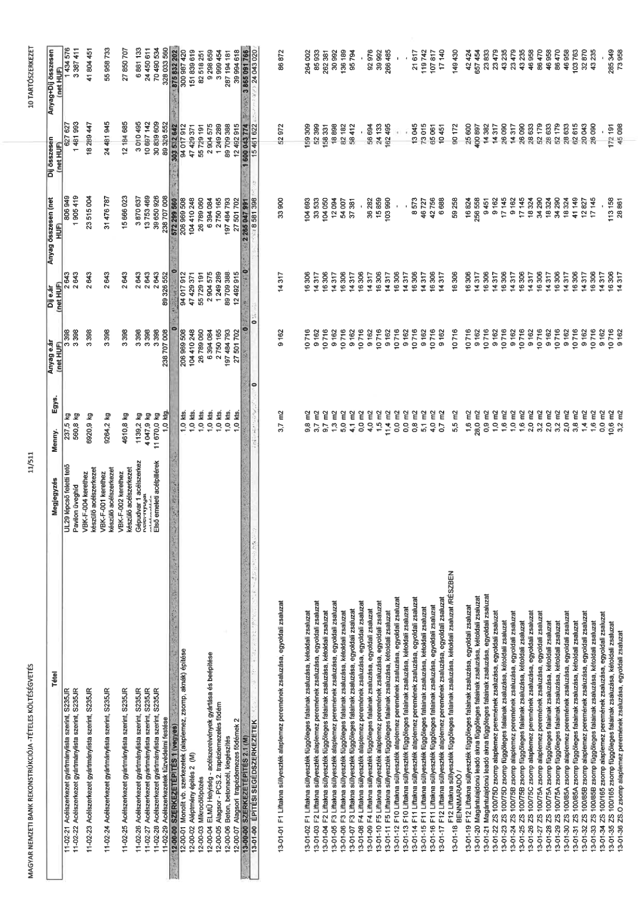

| Tétel | Megjegyzés | Menny. | Egys. | Anyag e.ár (net HUF) | Díj e.ár (net HUF) | Anyag összesen (net HUF) | Díj összesen (net HUF) | Anyag+Díj összesen (net HUF) |
|---|---|---|---|---|---|---|---|---|
| 11-02-21 Acélszerkezet gyártmány lista szerint, S235JR | U29 lépcső feletti tető | 237,5 | kg | 3 398 | 2 643 | 806 049 | 627 627 | 1 433 676 |
| 11-02-22 Acélszerkezet gyártmány lista szerint, S235JR | Pavilon üveghíd | 560,8 | kg | 3 398 | 2 643 | 1 905 419 | 1 481 493 | 3 386 912 |
| 11-02-23 Acélszerkezet gyártmány lista szerint, S235JR | VBK-F-004 kerethez készülő acélszerkezet | 6 920,9 | kg | 3 398 | 2 643 | 23 515 004 | 18 290 447 | 41 805 451 |
| 11-02-24 Acélszerkezet gyártmány lista szerint, S235JR | VBK-F-001 kerethez készülő acélszerkezet | 9 264,2 | kg | 3 398 | 2 643 | 31 476 787 | 24 481 645 | 55 958 432 |
| 11-02-25 Acélszerkezet gyártmány lista szerint, S235JR | VBK-F-002 kerethez készülő acélszerkezet | 4 610,8 | kg | 3 398 | 2 643 | 15 666 023 | 12 184 085 | 27 850 108 |
| 11-02-26 Acélszerkezet gyártmány lista szerint, S235JR | Gépudvar 1 acélszerkezet | 1 139,2 | kg | 3 398 | 2 643 | 3 870 637 | 3 010 495 | 6 881 132 |
| 11-02-27 Acélszerkezet gyártmány lista szerint, S235JR | Gépudvar 2 acélszerkezet | 4 047,9 | kg | 3 398 | 2 643 | 13 753 489 | 10 697 140 | 24 450 629 |
| 11-02-28 Acélszerkezet gyártmány lista szerint, S235JR | Első emeleti acélpillérek | 11 425,0 | kg | 3 398 | 2 643 | 38 820 028 | 30 192 639 | 69 012 667 |
| 11-02-29 Acélszerkezetek tűzvédelmi festése | NaN | 1,0 | kts | 238 707 008 | 89 326 552 | 238 707 008 | 89 326 552 | 328 033 560 |
| 12-00-00 SZERKEZETÉPÍTÉS 1 (vegyes) | NaN | NaN | NaN | 0 | 0 | 572 299 560 | 303 532 642 | 875 832 202 |
| 12-00-01 Monolit vb. szerkezetek (alaplemez, zsomp, aknák) építése | NaN | 1,0 | kts | 206 969 508 | 94 017 912 | 206 969 508 | 94 017 912 | 300 987 420 |
| 12-00-02 Alépítményi szigetelés 2. (M) | NaN | 1,0 | kts | 104 430 450 | 43 429 271 | 104 430 450 | 43 429 271 | 147 859 721 |
| 12-00-03 Mikrocölöpözés | NaN | 1,0 | kts | 26 789 060 | 55 729 191 | 26 789 060 | 55 729 191 | 82 518 251 |
| 12-00-04 ELMÜ Helyiség - acélszerelvények gyártása és beépítése | NaN | 1,0 | kts | 6 394 084 | 2 904 575 | 6 394 084 | 2 904 575 | 9 298 659 |
| 12-00-05 Alagsor - PCS-2, trapézlemezelés födém | NaN | 1,0 | kts | 2 750 165 | 1 249 289 | 2 750 165 | 1 249 289 | 3 999 454 |
| 12-00-06 Beton, betonacél, kiegészítés | NaN | 1,0 | kts | 197 464 793 | 89 709 388 | 197 464 793 | 89 709 388 | 287 174 181 |
| 12-00-07 Alagsor - Helyreállítási feladatok | NaN | 1,0 | kts | 27 501 702 | 12 492 915 | 27 501 702 | 12 492 915 | 39 994 617 |
| 13-00-00 SZERKEZETÉPÍTÉS 2.1 (M) | NaN | NaN | NaN | 0 | 0 | 2 265 047 991 | 1 600 043 774 | 3 865 091 766 |
| 13-01-00 ÉPÍTÉSI SEGÉDSZERKEZETEK | NaN | NaN | NaN | 0 | 0 | 8 581 398 | 15 461 622 | 24 043 020 |
